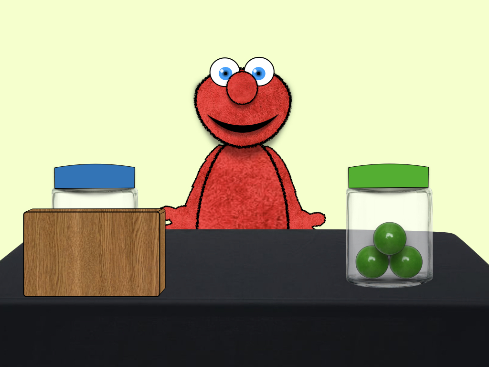
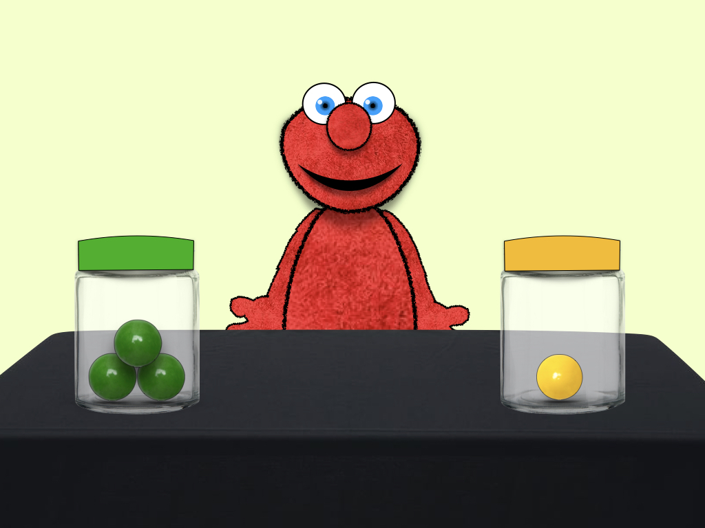

<!--terminal aliases: afs; goexp; git pull -->

<!--cgi-bin directory for scripts to be executed (eg: php script to save data to server); WWW/expts for files that don't need to be executed-->

<!DOCTYPE html>

<html>
    <head>
        <title>FUNCTIONAL elmo</title>        
        <script src="./jsPsych/jspsych.js"></script> 
        <script src="./jsPsych/plugins/jspsych-external-html.js"></script>
        <script src="./jsPsych/plugins/jspsych-html-keyboard-response.js"></script>
        <script src="./jsPsych/plugins/jspsych-html-button-response.js"></script>
        <script src="./jsPsych/plugins/jspsych-survey-text.js"></script>
        <script src="./jsPsych/plugins/jspsych-image-button-response.js"></script>
        <script src="./jsPsych/plugins/jspsych-survey-html-form.js"></script>
        <script src="./jsPsych/plugins/jspsych-audio-button-response.js"></script>
        <script src="./jsPsych/plugins/jspsych-fullscreen.js"></script>
        <script src="./jsPsych/plugins/jspsych-instructions.js"></script>
        <script src="./jsPsych/plugins/jspsych-video-button-response.js"></script>
        <script src="./jsPsych/plugins/jspsych-video-keyboard-response.js"></script>
         
<!--        <script src="./SCIP_jsPsych-summer.css"> </script>  -->
        <link href="./jsPSych/css/SCIP_jspsych.css" rel="stylesheet" type="text/css"/> 
        
        <script src="./jsPsych/mmturkey.js"></script>
        <script src="./jsPsych/jquery-1.11.2.min.js"></script>
        <script src="https://ajax.googleapis.com/ajax/libs/jquery/1.8.3/jquery.min.js"></script>
        <script src="https://ajax.googleapis.com/ajax/libs/jqueryui/1.9.2/jquery-ui.min.js"></script>
        <link type="text/css" href ="https://ajax.googleapis.com/ajax/libs/jqueryui/1.9.2/themes/base/jquery-ui.css" rel="stylesheet"/>
        
    <style>
        #exp-container {
            position: relative;
            width: 100%;
            max-width: 400px;
        }
        
        /*
            .container img {
                width: 100%;
                height: auto;
            }

            .container .left-btn {
                position: absolute;
                top: 50%;
                left: 25%;
                transform: translate(-50%, -50%);
                -ms-transform: translate(-50%, -50%);
                background-color: #f1f1f1;
                color: red;
                font-size: 16px;
                padding: 16px 30px;
                border: none;
                cursor: pointer;
                border-radius: 5px;
                text-align: center;
            }
             .container .right-btn {
                position: absolute;
                top: 50%;
                right: 25%;
                transform: translate(-50%, -50%);
                -ms-transform: translate(-50%, -50%);
                background-color: #f1f1f1;
                color: black;
                font-size: 16px;
                padding: 16px 30px;
                border: none;
                cursor: pointer;
                border-radius: 5px;
                text-align: center;
            }*/
</style> 
    </head>

    <body>
            <div id="exp-container" style={background-color:#0F0300}>
                <div id="btn-left-jar-trspnt"></div>
                <div id="btn-right-jar-trspnt"></div>
                <audio id="audio" src="http://www.soundjay.com/button/beep-07.wav" autoplay="false" ></audio>
            </div>
    </body>

<script> 

var timeline = [];
        
    var welcome = {
        type: 'html-keyboard-response',
        stimulus: '<center><p>Welcome to our game. Press any key to continue.</center>'
    };
    timeline.push(welcome);
    
    var inputScreen = {
        type: 'survey-text',
        preamble: "<b>Language and Cognition Lab</b><br><br>Please enter the following information before proceeding:",
        questions: [
            {prompt: "Subject ID:", placeholder: "e.g. Exp1-023", name:'subjectID'},
            //{prompt: "List Number:", placeholder: "1-8", name: 'listNum'},
            {prompt: "Age Group:", placeholder: "3/4/5/adult", name: 'age'}
        ]
    };
        timeline.push(inputScreen); 

/* entering fullscreen mode */
    timeline.push({  
        type: 'fullscreen',
        button_label: 'Enter',
        fullscreen_mode: true
    });
    
/*TODO1: load audio instructions on pages 1,2 */
/*TODO2: set video width to match img on next page; get rid of ugly left margin*/
    var intro2 = {
        type: 'instructions',
        pages: [
            "<p><center>This is Elmo!" + "<p> Elmo LOVES gumballs!" + 
            "<p><video autoplay><source src='./SCIP_video/Elmo-waves-nosound.m4v'></video>",
                "<p><center> In this game, Elmo will show you which jars of gumballs he likes better than others." + 
                "<p><center>", 
                "<p><center>Your job is to <em>remember</em> what he likes, so that you can help him out later in the game!" + 
                "<p><center>", 
        "<center><br><br><br>Press <b>'Next'</b> when you're ready to see which jars of gumballs Elmo likes!<br><br><br>"],
        show_clickable_nav: 'true'
    };
    timeline.push(intro2);
        
    var familiarization = {
        type: 'video-button-response',
        width: 800, 
        start: 0,
        controls: false,
        sources: ['SCIP_video/fam-ALL.mp4'],
        choices: ['continue']
    };
    timeline.push(familiarization);
        
    /*
    var familiarization = {
        type: 'video',
        width: 800, 
        start: 0,
        controls: true,
        timeline: [
            sources:['../SCIP_videos/fam-I.mp4',
                      '../SCIP_videos/fam-II.mp4',
                      '../SCIP_videos/fam-III.mp4',
                      '../SCIP_videos/fam-IV.mp4'
                      ]
        ]
    }
    */
        
    var testInstructions = {
        type: 'instructions',
        pages: ["<center><p> Now that Elmo has shown you what he likes, he needs your help!<br>",
                "<center><p> On the next screen, you will see two jars of gumballs.<br>" + "<center><p>Use the trackpad (laptop) or your finger (tablet) to click on the jar that Elmo would like better!<br><br><br> <b>Are you ready?</b>"],
        show_clickable_nav: 'true'
    };
    timeline.push(testInstructions);
    
    /*WORK IN PROGRESS: function that plays desired sound effect upon click*/
    function playClickSound() {
        var clickynoise = document.getElementById("audio");
        clickynoise.play();
    }
    
    var fixation = {
            type: 'html-button-response',
            stimulus:'<p style="font-size: 48px; font-color: blue;">+</p>',
            choices: '',
            prompt: '',
            trial_duration: 400
            };
    
    var tt_recapI = {
        type: 'html-button-response',
        stimulus: '<center>',
        prompt: "Which jar do you think Elmo will pick?",
        choices: ['leftJar','rightJar'],
        button_html: [
            '<button class="btn-left-jar-trspnt" onclick="playClickSound()"></button>',
            '<button class="btn-right-jar-trspnt"></button>'
        ],
        margin_vertical: '-1200px',
        is_html: 'true',
        data:{
            trialId: 'testtrial',
            trial_name: 'recap-I',
            correct_jar: 'right',
            leftJarInfo: ['yellow','1'],
            rightJarInfo: ['blue','2']
        }
    };
    var tt_recapII = {
        type: 'html-button-response',
        stimulus: '<center>',
        prompt: "Which jar do you think Elmo will pick?",
        choices: ['leftJar','rightJar'],
        button_html: [
            '<button class="btn-left-jar-trspnt"></button>',
            '<button class="btn-right-jar-trspnt"></button>'
        ],
        margin_vertical: '-1200px',
        is_html: 'true',
        data:{
            trialId: 'testtrial',
            trial_name: 'recap-II',
            correct_jar: 'right',
            leftJarInfo: ['blue','2'],
            rightJarInfo: ['green','3']
        }
    }; 
    var tt_recapIII = {
        type: 'html-button-response',
        stimulus: '<center>',
        prompt: "Which jar do you think Elmo will pick?",
        choices: ['leftJar','rightJar'],
        button_html: [
            '<button class="btn-left-jar-trspnt"></button>',
            '<button class="btn-right-jar-trspnt"></button>'
        ],
        margin_vertical: '-1200px',
        is_html: 'true',
        data:{
            trialId: 'testtrial',
            trial_name: 'recap-III',
            correct_jar: 'right',
            leftJarInfo: ['green','3'],
            rightJarInfo: ['red','4']
        }
    };      
    var tt_recapIV = {
        type: 'html-button-response',
        stimulus: '<center>',
        prompt: "Which jar do you think Elmo will pick?",
        choices: ['leftJar','rightJar'],
        button_html: [
            '<button class="btn-left-jar-trspnt"></button>',
            '<button class="btn-right-jar-trspnt"></button>'
        ],
        margin_vertical: '-1200px',
        is_html: 'true',
        data:{
            trialId: 'testtrial',
            trial_name: 'recap-IV',
            correct_jar: 'left',
            leftJarInfo: ['purple','5'],
            rightJarInfo: ['red','4']
        }
    }; 
    
    var tt_genI = {
        type: 'html-button-response',
        stimulus: '<center>',
        prompt: "Which jar do you think Elmo will pick?",
        choices: ['leftJar','rightJar'],
        button_html: [
            '<button class="btn-left-jar-trspnt"></button>',
            '<button class="btn-right-jar-trspnt"></button>'
        ],
        margin_vertical: '-1200px',
        is_html: 'true',
        data:{
            trialId: 'testtrial',
            trial_name: 'gen-I',
            correct_jar: 'left',
            leftJarInfo: ['green','3'],
            rightJarInfo: ['yellow','1']
        }
    };
    var tt_genII = {
        type: 'html-button-response',
        stimulus: '<center>',
        prompt: "Which jar do you think Elmo will pick?",
        choices: ['leftJar','rightJar'],
        button_html: [
            '<button class="btn-left-jar-trspnt"></button>',
            '<button class="btn-right-jar-trspnt"></button>'
        ],
        margin_vertical: '-1200px',
        is_html: 'true',
        data:{
            trialId: 'testtrial',
            trial_name: 'gen-II',
            correct_jar: 'left',
            leftJarInfo: ['purple','5'],
            rightJarInfo: ['green','3']
        }
    };
    
    var tt_criticalA = {
        type: 'html-button-response',
        stimulus: '<center>',
        prompt: "Which jar do you think Elmo will pick?",
        choices: ['leftJar','rightJar'],
        button_html: [
            '<button class="btn-left-jar-trspnt"></button>',
            '<button class="btn-right-jar-trspnt"></button>'
        ],
        margin_vertical: '-1200px',
        is_html: 'true',
        data:{
            trialId: 'testtrial',
            trial_name: 'critical',
            correct_jar: 'right',
            leftJarInfo: ['blue','2'],
            rightJarInfo: ['red','4']
        }
    };
    var tt_criticalB = {
        type: 'html-button-response',
        stimulus: '<center>',
        prompt: "Which jar do you think Elmo will pick?",
        choices: ['leftJar','rightJar'],
        button_html: [
            '<button class="btn-left-jar-trspnt"></button>',
            '<button class="btn-right-jar-trspnt"></button>'
        ],
        margin_vertical: '-1200px',
        is_html: 'true',
        data:{
            trialId: 'testtrial',
            trial_name: 'critical',
            correct_jar: 'left',
            leftJarInfo: ['red','4'],
            rightJarInfo: ['blue','2']
        }
    };
    
    timeline.push(fixation);
    timeline.push(tt_recapI, fixation);
    timeline.push(tt_recapII, fixation);
    timeline.push(tt_recapIII, fixation);
    timeline.push(tt_recapIV, fixation);
    timeline.push(tt_genI, fixation);
    timeline.push(tt_genII, fixation);
    timeline.push(tt_criticalA, fixation);
    timeline.push(tt_criticalB, fixation);  
        
  /* Exiting fullscreen mode   */      
    timeline.push({
        type: 'fullscreen',
        fullscreen_mode: false
    });
    
    var goodbye = {
        type: 'html-keyboard-response',
        stimulus: "<center><br><br><br>Thanks for playing the game with us!",
    }
    timeline.push(goodbye);
        
    // select all trials
var all_data = jsPsych.data.get().csv();
    //filter just exp trials (plus fixate-trials, other misc.)
    
var inputScreenData = jsPsych.data.get().filter({trial_type:'survey-text'}).csv();
    console.log(inputScreenData);
    
    
var SCIP1data = jsPsych.data.get().filter({trial_type:'html-button-response'}).ignore('internal_node_id').csv(); //alt var name: trialData
    console.log(SCIP1data); 

//var SCIP1data = inputScreenData.join(trialData); -- join method didn't work
    
//var rt_data = SCIP1data.select('rt');
//rt_data.mean();
    
    // get csv representation of data and log to console
//console.log(trialData);


    console.log(all_data);
    
  function saveData(name, data){
  var xhr = new XMLHttpRequest();
  xhr.open('POST', '../../../../cgi-bin/write-data-SCIP.php'); // path to php file
  xhr.setRequestHeader('Content-Type', 'application/json');
  xhr.send(JSON.stringify({filename: name, filedata: data}));
}

// call the saveData function after the experiment is over 
    jsPsych.init({
        //display_element: $('#jspsych-target'),
        //display_element:$('#container'),
        timeline: timeline,
        default_iti: 500,
        preload_images: ['./SCIP_images/Elmo-waves_screenshot.jpeg'],
        preload_audio: ['./SCIP_audio/SCIP-instructions-2-test.m4a','./SCIP_audio/This-is-elmo-test.m4a'],
        use_webaudio: false, // temporary setting for testing purposes
        experiment_width: 750, //max width
        on_finish: function() {saveData("../cgi-bin/SCIP_PP/data/exp1", SCIP1data);}
    });   
    
/* CODE FOR MTURK VERSION OF THIS EXP, FOR LOOKING UP TURKER LOCATION (code from GKachergis):
    
$.getJSON('https://json.geoiplookup.io/api?callback=?', function(data) {
  //console.log(JSON.stringify(data, null, 2));
  jsPsych.data.addProperties({ IP: data.ip, country_code: data.country_code });
  });  
  
    */
    
    
    
</script>

</html>